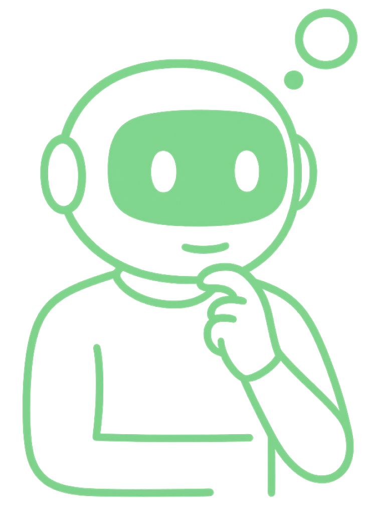

Esta página mostra as partes de um arduíno em um modelo 3D.
Entradas Digitais (0 a 13) São como interruptores simples: só dizem “ligado ou desligado”, “sim ou não”, “pressionado ou solto”. Pinos: 0 até 13 Ligação: Aqui vão botões, sensores de presença, fim de curso, etc. O Arduino escuta: “O botão foi apertado? Sim ou não.” Alguns desses pinos também funcionam como saídas, e alguns têm função especial como PWM (marcado com ~), mas isso é mais pra frente.
Outras conexões importantes
GND (Ground, terra)
Todo sensor precisa estar “aterrado” junto com o Arduino — pense nisso como um “fio neutro” ou “pé no chão”.
5V / 3.3V
Esses pinos são as fontes de energia para alimentar sensores e módulos.
Eles funcionam como um coração bombeando energia para os sentidos do robô.
Botão para reiniciar o código no arduíno.
A entrada de energia serve para conectar o arduino no computador e ao mesmo tempo, dar energia para o processamento dos dados.
Permite programar o microcontrolador diretamente, seja para carregar um programa (sketch) ou o bootloader, sem a necessidade de um programa já existente no chip, como o feito via cabo USB.
Entradas Analógicas (A0 até A5) São como os sentidos suaves do Arduino, que percebem variações. Exemplo: Um sensor de luz pode dizer se está muito claro, médio ou escuro — não é só “sim ou não”, é gradual. Marcação: A0, A1, A2, A3, A4, A5 Ligação: Aqui você conecta sensores como LDR, sensor de temperatura, potenciômetros etc. Imagine que o Arduino está "avaliando o brilho do sol" — ele precisa de um número que varia!